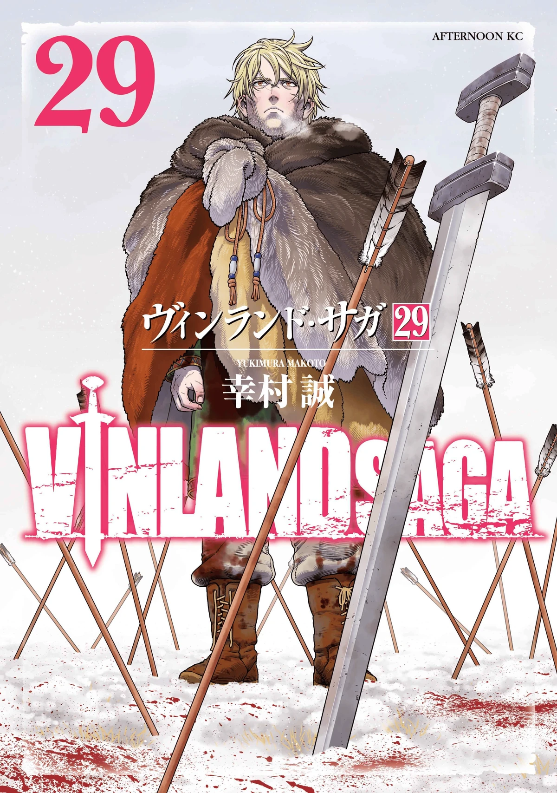
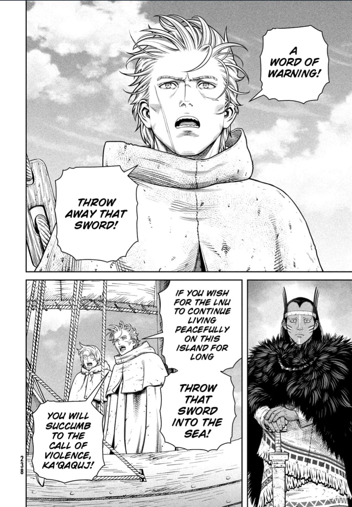

Vinland Saga
by Makoto Yukimura
Synopsis
Set during the age of the Vikings, Vinland Saga follows Thorfinn, a young warrior shaped by violence and driven by revenge against Askeladd, the man responsible for his father's death. As he becomes caught in battles, political struggles, and the ambitions of powerful leaders, Thorfinn begins a difficult journey that challenges his understanding of strength, hatred, and the meaning of a true warrior.
Chapter 1

In a harsh world ruled by Viking raids and warfare, stories of distant lands and legendary warriors capture the imagination of young Thorfinn. His life changes as he becomes connected to a group of battle-hardened Vikings, bringing him closer to the brutal reality of the world he once only heard about.
As conflict and ambition shape the lives of those around him, Thorfinn's path begins to intertwine with questions of honor, revenge, and survival. His journey will test not only his fighting ability but also the beliefs that guide him through a world consumed by violence.
— End of chapter —